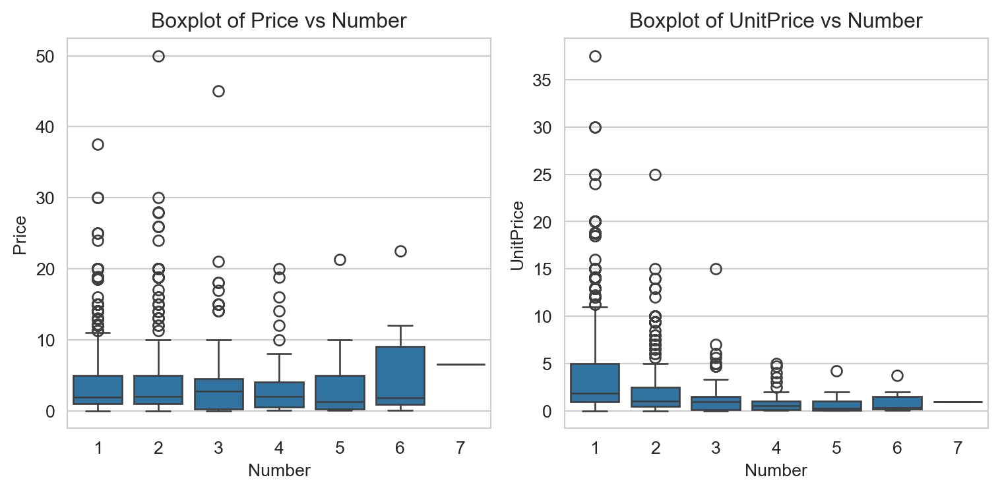

| Condition | NumberSold | Riders | MerchandiseRevenues | |
|---|---|---|---|---|
| 0 | FR | 77 | 12663 | 4592.41 |
| 1 | FR | 63 | 15561 | 6688.57 |
| 2 | FR Charity | 79 | 14796 | 6476.78 |
| 3 | FR Charity | 101 | 15796 | 5845.94 |
| 4 | NYOP | 1137 | 14077 | 4845.27 |
| 5 | NYOP | 1233 | 14186 | 7038.63 |
| 6 | NYOP Charity | 539 | 12227 | 5690.59 |
| 7 | NYOP Charity | 628 | 13741 | 6003.44 |
| 8 | NYOP Charity | 626 | 18117 | 8557.47 |
FLAT RATE PRICING
This project using hypothesis to run A/B testing.
# Find the total sales of each condition
sales_count = sales.groupby("Condition", observed=False)['NumberSold'].sum()
print(sales_count)
# Total sales of all conditions
total_sales = sales_count.sum()
print(total_sales)Condition
FR 140
FR Charity 180
NYOP 2370
NYOP Charity 1793
Name: NumberSold, dtype: int64
4483#number of sales for FR
FR_sales = sales_count.iloc[0]
# The proportion of FR sales
prob_fr = FR_sales/ total_sales
print(f"The proportion of flat rate price is {prob_fr}")
#number of sales for FR Charity
FR_charity_sales = sales_count.iloc[1]
# The proportion of FR Charity sales
prob_fr_charity = sales_count.iloc[1]/ total_sales
print(f"The proportion of flat rate price charity is {prob_fr_charity}")The proportion of flat rate price is 0.031229087664510373
The proportion of flat rate price charity is 0.04015168414008476To determine whether FR and FR Charity are difference proportion of purchase, we use the hypothesis test. The null hypothesis is that the proportion of purchase is the same for FR and FR Charity. The alternative hypothesis is that the proportion of purchase is different for FR and FR Charity.
The hypothesis is:
\[H_0: p_{FR} = p_{FR \; Charity}\] \[H_a: p_{FR} \neq p_{FR \; Charity}\]
Where \(p_{FR}\) is the proportion of purchase for FR and \(p_{FR \; Charity}\) is the proportion of purchase for FR Charity.
# find z test statistic
numerator = prob_fr - prob_fr_charity
denominator = np.sqrt((prob_fr * (1 - prob_fr))/FR_sales + (prob_fr_charity * (1 - prob_fr_charity))/FR_charity_sales)
z_score = numerator/denominator
print(f"z_score is {z_score}")
# find p value
p_value = (1 - (norm.sf(z_score)))*2
print(f"p_value is {p_value}")z_score is -0.43018214003639416
p_value is 0.6670631527631585Assume that confidence level in this case is 95% . So we will reject null hypothesis if Z_score \(\geq\) -1.96 or Z_score \(\leq\) 1.96
We have Z_score = -0.43 which is not in the rejection region. So we can not reject the null hypothesis. It means that the proportion of purchase is the same for FR and FR Charity.
Now for the \(p\) approach, let’s manually calculate the p-value. We have:
\(p\) = P(Z \(\geq\) 0.43 or Z \(\leq\) -0.43) = 2 * P(Z \(\leq\) -0.43) = 2 * 0.332 = 0.664 \(\sim\) 0.667 above
So \(p\) = 0.664 > 0.05. It means that we do not have enough evidence to reject the null hypothesis.
NYOP PRICING
# number of sales for NYOP
nyop_sale = sales_count.iloc[2]
# The proportion of NYOP sales
prob_nyop = nyop_sale/ total_sales
print(f"The proportion of NYOP is {prob_nyop}")
# number of sales for NYOP Charity
nyop_charity_sales = sales_count.iloc[3]
# The proportion of NYOP Charity sales
prob_nyop_charity = nyop_charity_sales/ total_sales
print(f"The proportion of NYOP Charity is {prob_nyop_charity}")The proportion of NYOP is 0.5286638411777828
The proportion of NYOP Charity is 0.3999553870176221To determine whether NYOP and NYOP Charity are difference proportion of purchase, we use the hypothesis test. The null hypothesis is that the proportion of purchase is the same for NYOP and NYOP Charity. The alternative hypothesis is that the proportion of purchase is different for NYOP and NYOP Charity.
The hypothesis is:
\[H_0: p_{NYOP} = p_{NYOP \; Charity}\] \[H_a: p_{NYOP} \neq p_{NYOP \; Charity}\]
Where \(p_{NYOP}\) is the proportion of purchase for NYOP and \(p_{NYOP \; Charity}\) is the proportion of purchase for NYOP Charity.
# find z test statistic
numerator = prob_nyop - prob_nyop_charity
denominator = np.sqrt((prob_nyop * (1 - prob_nyop))/nyop_sale + (prob_nyop_charity * (1 - prob_nyop_charity))/nyop_charity_sales)
z_score = numerator/denominator
print(f"z_score is {z_score}")
# find p value
p_value = norm.sf((z_score))*2
print(f"p_value is {p_value}")z_score is 8.325676265627516
p_value is 8.38486658961012e-17Assume that confident level in this case is 95% . So we will reject null hypothesis if Z_score \(\geq\) -1.96 or Z_score \(\leq\) 1.96
We have Z_score = 8.33 which is in the rejection region. So we can reject the null hypothesis. It means that the proportion of purchase is different for NYOP and NYOP Charity.
Now for the \(p\) approach:
\(p\) = P(Z \(\geq\) 8.32 or Z \(\leq\) -8.32) = 2 * P(Z \(\leq\) -8.32) = 2 * 0 = 0
That is, the \(p\) value is less than 0.0001. Because P_value < 0.05, we can reject the null hypothesis. Again, there is sufficient evidence at the 0.05 level to conclude that the proportion of purchase is different for NYOP and NYOP Charity.
# Load NYOP data
nyop = pd.read_csv('NYOP.csv')
print(nyop.head(15)) Condition Number Price
0 NYOP 1 1.00
1 NYOP 1 1.00
2 NYOP 1 0.01
3 NYOP 1 0.10
4 NYOP 1 0.01
5 NYOP 2 0.02
6 NYOP 1 5.00
7 NYOP 1 1.00
8 NYOP 2 0.02
9 NYOP 1 0.05
10 NYOP 1 0.75
11 NYOP 1 1.50
12 NYOP 1 0.20
13 NYOP 1 0.01
14 NYOP 1 1.00# create a new column for unit price
nyop['UnitPrice'] = nyop['Price'] / nyop['Number']
# Change the data type of "Number" column to a factor:
nyop['Number'] = nyop['Number'].astype('category')
nyop.head()| Condition | Number | Price | UnitPrice | |
|---|---|---|---|---|
| 0 | NYOP | 1 | 1.00 | 1.00 |
| 1 | NYOP | 1 | 1.00 | 1.00 |
| 2 | NYOP | 1 | 0.01 | 0.01 |
| 3 | NYOP | 1 | 0.10 | 0.10 |
| 4 | NYOP | 1 | 0.01 | 0.01 |
Visualize both Price and UnitPrice against the factor variable Number
import matplotlib.pyplot as plt
import seaborn as sns
# Set style
sns.set_style("whitegrid")
# Create a 1x2 subplot to visualize both Price and UnitPrice
fig, axes = plt.subplots(nrows=1, ncols=2, figsize=(15, 6))
# Boxplot for Price vs Number
sns.boxplot(x='Number', y='Price', data=nyop, ax=axes[0])
axes[0].set_title('Boxplot of Price vs Number')
axes[0].set_ylabel('Price')
axes[0].set_xlabel('Number')
# Boxplot for UnitPrice vs Number
sns.boxplot(x='Number', y='UnitPrice', data=nyop, ax=axes[1])
axes[1].set_title('Boxplot of UnitPrice vs Number')
axes[1].set_ylabel('UnitPrice')
axes[1].set_xlabel('Number')
# Adjust layout
plt.tight_layout()
plt.show()
\(\textit{Boxplot of Price vs. Number:}\)
The median price generally increases as the number increases.
The variability (as shown by the height of the boxes) also seems to increase with the number. This means that as the number increases, the prices are spread out over a wider range.
There are some outliers, especially for lower numbers.
\(\textit{Boxplot of UnitPrice vs. Number:}\)
The median unit price is consistent across the different numbers. This is expected, as the unit price is simply the price divided by the number.
The variability of unit prices decreases as the number increases. For number 1, there’s a wide range of unit prices, but this range narrows down for higher numbers.
As with the price, there are some outliers for lower numbers in unit price.
In summary, while the absolute price increases with the number and has increasing variability, the unit price seems relatively consistent across different numbers but with decreasing variability.
- Determine the average unit purchase price for both the NYOP and the NYOP Charity conditions
# Find the average unit price of each condition
x_bar = nyop.groupby("Condition", observed=False)['UnitPrice'].mean()
# Find the average unit price of NYOP
x_bar_nyop = x_bar.iloc[0]
print(f"The average unit price of NYOP is {x_bar_nyop}")
# Find the average unit price of NYOP
x_bar_nyop_charity = x_bar.iloc[1]
print(f"The average unit price of NYOP Charity is {x_bar_nyop_charity}")The average unit price of NYOP is 1.040438756855576
The average unit price of NYOP Charity is 5.680480439258751If we only look at the result above, the different between NYOP and NYOP charity is substantial. However, to determine whether the different between average unit price for NYOP and NYOP Charity is statistically significant, we use T-distribution test. The null hypothesis is that the average unit price for NYOP and NYOP Charity is the same. The alternative hypothesis is that the average unit price for NYOP and NYOP Charity is different.
The hypothesis test is: \[H_0: \mu_{nyop} - \mu_{nyop\;charity} = 0\] \[H_a: \mu_{nyop} - \mu_{nyop\;charity} \neq 0\]
Where:
\(\mu_{nyop}\) is the average unit price for NYOP
\(\mu_{nyop\;charity}\) is the average unit price for NYOP Charity
- Use the pyrsm library to perform the test computation (Compare means)
nyop_test = rsm.basics.compare_means({"data": nyop}, var1 = "Condition", var2 = "UnitPrice", alt_hyp = "two-sided",
sample_type='independent', conf = 0.95, test_type="t-test")
nyop_test.summary(extra = True)Pairwise mean comparisons (t-test)
Data : data
Variables : Condition, UnitPrice
Samples : independent
Confidence: 0.95
Adjustment: None
Condition mean n n_missing sd se me
NYOP 1.04 1641 0 1.305 0.032 0.063
NYOP Charity 5.68 1457 0 4.670 0.122 0.240
Null hyp. Alt. hyp. diff p.value se t.value df 2.5% 97.5%
NYOP = NYOP Charity NYOP not equal to NYOP Charity -4.64 < .001 0.127 -36.676 1657.943 -4.888 -4.392 ***
Signif. codes: 0 '***' 0.001 '**' 0.01 '*' 0.05 '.' 0.1 ' ' 1Do analytics by hand
# Find the standard deviation of the sample
s = nyop.groupby("Condition", observed=False)['UnitPrice'].std()
# Standard deviation of NYOP
s_nyop = s.iloc[0]
print(f"The standard deviation of NYOP is {s_nyop}")
# Standard deviation of NYOP Charity
s_nyop_charity = s.iloc[1]
print(f"The standard deviation of NYOP Charity is {s_nyop_charity}")
# Find the sample size
n = nyop.groupby("Condition", observed=False)['UnitPrice'].count()
# Sample size of NYOP
n_nyop = n.iloc[0]
print(f"The sample size of NYOP is {n_nyop}")
# Sample size of NYOP Charity
n_nyop_charity = n.iloc[1]
print(f"The sample size of NYOP Charity is {n_nyop_charity}")The standard deviation of NYOP is 1.3053709602869232
The standard deviation of NYOP Charity is 4.669903393923693
The sample size of NYOP is 1641
The sample size of NYOP Charity is 1457from scipy.stats import t
# Find t test statistic
t_value = (x_bar_nyop - x_bar_nyop_charity)/np.sqrt((s_nyop**2/n_nyop) + (s_nyop_charity**2/n_nyop_charity))
print(f'T_value is {t_value}')
# Find degree of freedom
a = (s_nyop**2/n_nyop)/(s_nyop**2/n_nyop+s_nyop_charity**2/n_nyop_charity)
numerator = (n_nyop-1)*(n_nyop_charity-1)
denominator = (n_nyop_charity-1)*(a**2) + (n_nyop-1)*((1-a)**2)
degree_of_freedom = numerator/denominator
print(f"Degree of freedom is {degree_of_freedom}")
# Find p value
p_value = t.sf(abs(t_value), degree_of_freedom)*2
print(f"P_test is {p_value}")T_value is -36.675728193478896
Degree of freedom is 1657.9433648647218
P_test is 3.954550853548388e-216Based on the result showing in both radiant and analysis by hand:
\(p\) value = 0.000 < 0.05. So we have enough to reject the null hypothesis. It means that the average unit price for NYOP and NYOP Charity are different.
In hypothesis testing:
Type I Error (\(α\)): This occurs when we incorrectly reject a true null hypothesis. It’s also known as a “false positive.”
Type II Error (\(β\)): This occurs when we fail to reject a false null hypothesis. It’s also known as a “false negative.”
In this case, \(p\) value is extremely small, so we can reject the null hypothesis. But if the true state is that the average unit price for NYOP and NYOP Charity is the same, we will make a Type I Error. However, given the extremely small \(p\) value, the probability of making a Type I Error is very small.
The difference between NYOP and NYOP Charity for those who purchase 1 picture
To determine whether the different between average unit price for NYOP and NYOP Charity is statistically significant, we use T-distribution test. The null hypothesis is that the average unit price for NYOP and NYOP Charity is the same. The alternative hypothesis is that the average unit price for NYOP and NYOP Charity is different.
The hypothesis test is: \[H_0: \mu_{nyop} - \mu_{nyop\;charity} = 0\] \[H_a: \mu_{nyop} - \mu_{nyop\;charity} \neq 0\]
Where:
\(\mu_{nyop}\) is the average unit price for NYOP
\(\mu_{nyop\;charity}\) is the average unit price for NYOP Charity
# Filter the data to only include people who purchase one photo
one_photo = nyop[nyop['Number'] == 1]# Use radiant to check the result
one_photo_test = rsm.basics.compare_means({"one_photo": one_photo}, var1 = "Condition", var2 = "UnitPrice", alt_hyp = "two-sided",
sample_type='independent', conf = 0.95, test_type="t-test")
one_photo_test.summary(extra = True)Pairwise mean comparisons (t-test)
Data : one_photo
Variables : Condition, UnitPrice
Samples : independent
Confidence: 0.95
Adjustment: None
Condition mean n n_missing sd se me
NYOP 1.177 1162 0 1.432 0.042 0.082
NYOP Charity 5.941 1203 0 4.830 0.139 0.273
Null hyp. Alt. hyp. diff p.value se t.value df 2.5% 97.5%
NYOP = NYOP Charity NYOP not equal to NYOP Charity -4.765 < .001 0.145 -32.755 1418.571 -5.05 -4.479 ***
Signif. codes: 0 '***' 0.001 '**' 0.01 '*' 0.05 '.' 0.1 ' ' 1Do analysis by hand
# Find t test statistic
t_value = (x_bar_nyop - x_bar_nyop_charity)/np.sqrt((s_nyop**2/n_nyop) + (s_nyop_charity**2/n_nyop_charity))
print(f'T_value is {t_value}')
# Find degree of freedom
a = (s_nyop**2/n_nyop)/(s_nyop**2/n_nyop+s_nyop_charity**2/n_nyop_charity)
numerator = (n_nyop-1)*(n_nyop_charity-1)
denominator = (n_nyop_charity-1)*(a**2) + (n_nyop-1)*((1-a)**2)
degree_of_freedom = numerator/denominator
print(f"Degree of freedom is {degree_of_freedom}")
# Find p value
p_value = t.sf(abs(t_value), degree_of_freedom)*2
print(f"P_value is {p_value}")T_value is -36.675728193478896
Degree of freedom is 1657.9433648647218
P_value is 3.954550853548388e-216# Find the average unit price of each condition
x_bar = one_photo.groupby("Condition", observed=False)['UnitPrice'].mean()
# Find the average unit price of NYOP
x_bar_nyop = x_bar.iloc[0]
print(f"The average unit price of NYOP is {x_bar_nyop}")
# Find the average unit price of NYOP Charity
x_bar_nyop_charity = x_bar.iloc[1]
print(f"The average unit price of NYOP Charity is {x_bar_nyop_charity}")
# Find the standard deviation of the sample
s = one_photo.groupby("Condition", observed=False)['UnitPrice'].std()
# Standard deviation of NYOP
s_nyop = s.iloc[0]
print(f"The standard deviation of NYOP is {s_nyop}")
# Standard deviation of NYOP Charity
s_nyop_charity = s.iloc[1]
print(f"The standard deviation of NYOP Charity is {s_nyop_charity}")
# Find the sample size
n = one_photo.groupby("Condition", observed=False)['UnitPrice'].count()
# Sample size of NYOP
n_nyop = n.iloc[0]
print(f"The sample size of NYOP is {n_nyop}")
# Sample size of NYOP Charity
n_nyop_charity = n.iloc[1]
print(f"The sample size of NYOP Charity is {n_nyop_charity}")The average unit price of NYOP is 1.1765232358003443
The average unit price of NYOP Charity is 5.941155444721529
The standard deviation of NYOP is 1.4321112974184242
The standard deviation of NYOP Charity is 4.830261504439939
The sample size of NYOP is 1162
The sample size of NYOP Charity is 1203The difference between NYOP and NYOP Charity for those who purchase 6 pictures
# Filter the data to only include people who purchase 6 photos
six_photos = nyop[nyop['Number'] == 6]# Use the pyrsm to perform t test
six_photo_test = rsm.basics.compare_means({"six_photos": six_photos}, var1 = "Condition", var2 = "UnitPrice", alt_hyp = "two-sided",
sample_type='independent', conf = 0.95, test_type="t-test")
six_photo_test.summary(extra = True)Pairwise mean comparisons (t-test)
Data : six_photos
Variables : Condition, UnitPrice
Samples : independent
Confidence: 0.95
Adjustment: None
Condition mean n n_missing sd se me
NYOP 0.495 6 0 0.615 0.251 0.646
NYOP Charity 1.970 3 0 1.795 1.036 4.459
Null hyp. Alt. hyp. diff p.value se t.value df 2.5% 97.5%
NYOP = NYOP Charity NYOP not equal to NYOP Charity -1.475 0.288 1.066 -1.383 2.239 -5.625 2.675
Signif. codes: 0 '***' 0.001 '**' 0.01 '*' 0.05 '.' 0.1 ' ' 1Do Analysis by hand:
# Find the average unit price of each condition
x_bar = six_photos.groupby("Condition", observed=False)['UnitPrice'].mean()
# Find the average unit price of NYOP
x_bar_nyop = x_bar.iloc[0]
print(f"The average unit price of NYOP is {x_bar_nyop}")
# Find the average unit price of NYOP Charity
x_bar_nyop_charity = x_bar.iloc[1]
print(f"The average unit price of NYOP Charity is {x_bar_nyop_charity}")
# Find the standard deviation of the sample
s = six_photos.groupby("Condition", observed=False)['UnitPrice'].std()
# Standard deviation of NYOP
s_nyop = s.iloc[0]
print(f"The standard deviation of NYOP is {s_nyop}")
# Standard deviation of NYOP Charity
s_nyop_charity = s.iloc[1]
print(f"The standard deviation of NYOP Charity is {s_nyop_charity}")
# Find the sample size
n = six_photos.groupby("Condition", observed=False)['UnitPrice'].count()
# Sample size of NYOP
n_nyop = n.iloc[0]
print(f"The sample size of NYOP is {n_nyop}")
# Sample size of NYOP Charity
n_nyop_charity = n.iloc[1]
print(f"The sample size of NYOP Charity is {n_nyop_charity}")The average unit price of NYOP is 0.49499999999999994
The average unit price of NYOP Charity is 1.97
The standard deviation of NYOP is 0.6152316636845019
The standard deviation of NYOP Charity is 1.7951880124376947
The sample size of NYOP is 6
The sample size of NYOP Charity is 3# Find t test statistic
t_value = (x_bar_nyop - x_bar_nyop_charity)/np.sqrt((s_nyop**2/n_nyop) + (s_nyop_charity**2/n_nyop_charity))
print(f'T_value is {t_value}')
# Find degree of freedom
a = (s_nyop**2/n_nyop)/(s_nyop**2/n_nyop+s_nyop_charity**2/n_nyop_charity)
numerator = (n_nyop-1)*(n_nyop_charity-1)
denominator = (n_nyop_charity-1)*(a**2) + (n_nyop-1)*((1-a)**2)
degree_of_freedom = numerator/denominator
print(f"Degree of freedom is {degree_of_freedom}")
# Find p value
p_value = t.sf(abs(t_value), degree_of_freedom)*2
print(f"P_value is {p_value}")T_value is -1.3830917803702294
Degree of freedom is 2.238711549258564
P_value is 0.2884114566627225\(p\) value = 0.3 > 0.05. So we do not have enough to reject the null hypothesis. It means that the difference between NYOP and NYOP Charity for those who purchase 6 pictures is not statistically significant.
The result showing in both Radiant and analysis by hand are the same. In general, manual calculations and standard statistical software should yield the same results, given the same data and assumptions. Any discrepancy would either be due to an error in computation or different assumptions/methodologies applied.
\(p\) value = 0.002 < 0.05. So we have enough evidence to reject the null hypothesis. It means that the average purchase of 1 photo and 6 photos are different. Again, we have the same result as above because the data size is large enough.
Economics
# Add cost and profit column to sales data
sales['Cost'] = sales['NumberSold'] * 1.2
sales['Merchandise_Profit'] = sales['MerchandiseRevenues'] - sales['Cost']
# Find the average profit of each condition
avg_profit = sales.groupby("Condition", observed=False)['Merchandise_Profit'].mean()
print(avg_profit)Condition
FR 5556.49
FR Charity 6053.36
NYOP 4519.95
NYOP Charity 6033.30
Name: Merchandise_Profit, dtype: float64Due to the data on Avg_profit table, The “FR Charity” option has the highest value of $6053.36, making it the most profitable option among the ones listed And the ranking is: FR Charity > FR > NYOP Charity > NYOP
When think about additional value created by FR charity and NYOP charity, we need to consider both theme park’s profits and the profits directed towards to the charity. In this case, we have:
Charity Profit = 0.5 × Merchandise Revenues
Theme Park Profit = Merchandise Revenues − Cost of Photos − Charity Profit = Merchandise Profit - Charity Profit
Societal Profit = Charity Profit + Theme Park Profit
def societal_profit(row):
if row['Condition'] in ['FR Charity', 'NYOP Charity']:
charity_profit = 0.5 * row['MerchandiseRevenues']
theme_park_profit = row['Merchandise_Profit'] - charity_profit
return charity_profit + theme_park_profit
else:
return row['Merchandise_Profit']
sales['SocietalProfit'] = sales.apply(societal_profit, axis=1)
print(sales.head(10)) Condition NumberSold Riders MerchandiseRevenues Cost \
0 FR 77 12663 4592.41 92.4
1 FR 63 15561 6688.57 75.6
2 FR Charity 79 14796 6476.78 94.8
3 FR Charity 101 15796 5845.94 121.2
4 NYOP 1137 14077 4845.27 1364.4
5 NYOP 1233 14186 7038.63 1479.6
6 NYOP Charity 539 12227 5690.59 646.8
7 NYOP Charity 628 13741 6003.44 753.6
8 NYOP Charity 626 18117 8557.47 751.2
Merchandise_Profit SocietalProfit
0 4500.01 4500.01
1 6612.97 6612.97
2 6381.98 6381.98
3 5724.74 5724.74
4 3480.87 3480.87
5 5559.03 5559.03
6 5043.79 5043.79
7 5249.84 5249.84
8 7806.27 7806.27 # Find average societal profit of each condition
avg_societal_profit = sales.groupby("Condition", observed=False)['SocietalProfit'].mean()
print(avg_societal_profit)Condition
FR 5556.49
FR Charity 6053.36
NYOP 4519.95
NYOP Charity 6033.30
Name: SocietalProfit, dtype: float64By the results above, FR and NYOP do not have charity profit, so the societal profit is the same as merchandise profit.
Considering societal profits, which include both theme park’s profits and the contributions to charity, the ranking is: FR Charity > NYOP Charity
If considering all condition, the ranking will be: FR Charity > NYOP Charity > FR > NYOP
The rankings indicate that the charity conditions (FR Charity and NYOP Charity) not only benefit the theme park but also significantly contribute to societal value, making them the top two strategies in terms of societal profits.
- To determine how much additional societal profit the leading strategy (“FR Charity”) generates over the others over the entire year, we’ll:
Calculate the yearly societal profit for the leading strategy by multiplying its average daily profit by 365.
Calculate the yearly societal profit for each of the other strategies.
Subtract the yearly societal profit of each of the other strategies from that of the leading strategy to determine the difference.
# Calculate yearly societal profit for each strategy
yearly_societal_profit = avg_societal_profit * 365
# Calculate the additional profit the leading strategy generates over the others
additional_profit = yearly_societal_profit['FR Charity'] - yearly_societal_profit
additional_profitCondition
FR 181357.55
FR Charity 0.00
NYOP 559694.65
NYOP Charity 7321.90
Name: SocietalProfit, dtype: float64Over the entire year (assuming 365 days), the leading strategy “FR Charity” generates the following additional societal profits over the other strategies:
$181,357.55 more than the “FR” strategy.
$559,694.65 more than the “NYOP” strategy.
$7,321.90 more than the “NYOP Charity” strategy.
This analysis underscores the significant societal value that the “FR Charity” strategy offers compared to the other strategies over the course of a year.
Summary:
FR Strategy:
- Total photos sold: 140
- Average photos sold per day: 70
- Total merchandise revenues: $11,280.98
- Average merchandise revenue per day: $5,640.49
FR Charity Strategy:
- Total photos sold: 180
- Average photos sold per day: 90
- Total merchandise revenues: $12,322.72
- Average merchandise revenue per day: $6,161.36
NYOP Strategy:
- Total photos sold: 2,370
- Average photos sold per day: 1,185
- Total merchandise revenues: $11,883.90
- Average merchandise revenue per day: $5,941.95
NYOP Charity Strategy:
- Total photos sold: 1,793
- Average photos sold per day: 597.67
- Total merchandise revenues: $20,251.50
- Average merchandise revenue per day: $6,750.50
From the summary:
The NYOP strategy has the highest number of photos sold, both in total and on average daily. However, its average merchandise revenue is not the highest, which suggests that photos under this strategy might be priced lower.
The NYOP Charity strategy has the highest average and total merchandise revenues, even though it doesn’t have the highest number of photos sold. This suggests that the photos under this strategy might be priced higher or that people might be more willing to buy when they know a portion goes to charity.
Whether or not merchandise sales are a concern depends on the goals and expectations of the theme park. If the aim is to maximize revenues, the current data suggests the “NYOP Charity” strategy is performing well. If the goal is to sell the most photos, then the “NYOP” strategy is leading.
But when considering about profit, the FR Charity strategy is the best option even though it doesn’t have the highest average and total merchandise revenues. This suggests that the FR Charity strategy is the best option for the theme park, as it maximizes both revenues and profits.